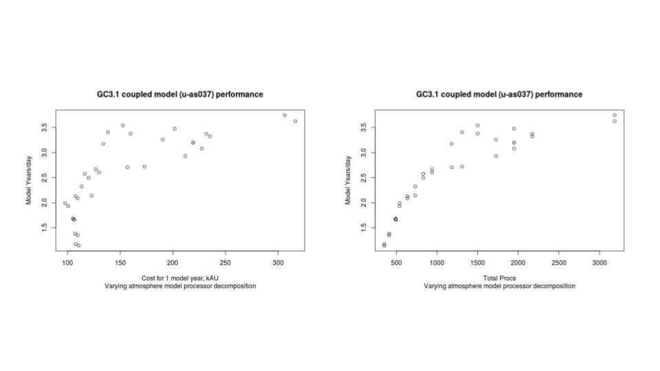

6. Further Exercises (1)¶
Now that we have built the suite, there is no need to rebuild it each time you run it. Switch off compilation of the UM and reconfiguration.
Hint
See the suite conf section in the Rose edit GUI.
6.1. Change the model output logging behaviour¶
Navigate to um –> namelist –> Top Level Model Control –> Run Control and Time Settings.
Set ltimer to True. Timer diagnostics outputs timing information and can be very useful in diagnosing performance problems.
Save and Run the suite.
Check the output from processor 0 in the``fort6.pe000`` file.
Which routine took the most time?
How many times was
Atm_Stepcalled?How many time steps did the model run for?
Which PE was the slowest to run AP2 Boundary Layer? Which was the fastest?
Switch on “IO timing”
Hint
Look in the IO System Settings panel.
Re-run the model and search for “Total IO Timings” in the job.out file.
6.2. Change the processor decomposition¶
Navigate to suite conf –> Domain Decomposition –> Atmosphere.
What is the current processor decomposition?
Why is this not a good way to run the model?
Hint
The base ARCHER2 charging unit is a node irrespective of how many cores on the node are being used. ARCHER2 has 128 cores per node, and for the UM each MPI task and OpenMP thread is mapped to a separate core. So in this case we are running 10x16 (x 2 OMP threads) for a total of 320 cores, but are charged for 3 nodes (384 cores).
Try experimenting with different processor decompositions (E.g. 10x32, 16x32, etc)
How do the timings compare to when you ran on 3 nodes?
You can come up with a performance vs processor count curve in this way which might be valuable if you are planning an experiment - it’s also worth adding in the CU cost calculation when doing this. An example of this can be seen below:
{kind=link}
Note
Running “under populated”, i.e. with fewer than the total cores per node, gives access to more memory per parallel task.
Change the processor decomposition to run fully populated on 3 nodes with 2 OpenMP threads.
6.3. STASH¶
Exploring STASH¶
Navigate to um –> namelist –> Model Input and Output –> STASH Requests and Profiles. Look at the time profiles called TALLTS and T6H.
What are they doing?
TALLTS says output on every timestep, T6H says output 6 hourly.
Look also at some of the other time, domain and usage profiles. The domain profiles determine spatial output and the usage profiles effectively specify a Fortran LUN (Logical Unit Number) on which the associated data is written.
Click on STASH Requests. Now change the time profile for all stash output whose Usage profile is UPC and Time profile is T6H. To do this, click on each diagnostic you wish to change and then click the time profile, a drop-down list should appear containing all the available time profiles. Select TALLTS. You can sort the STASH table to make it more convenient to make these changes. Click on the use_name column header to sort by usage profile.
STASH validation macro¶
Several Rose macros have been provided to help verify STASH setup. When you change STASH it is always recommended to run at least the validate macro. The stash_testmask.STASHTstmskValidate macro ensures that the STASH output requsted is valid given the science configuration of the app. To put this to the test run the STASH validation macro by selecting stash_testmask.STASHTstmskValidate from the list of available macros at the top of the STASH requests panel or alternatively it can be accessed from the Metadata –> um menu.
You should see several errors reported - it appears we have asked for diagnostics which are not available. This won’t cause the model to fail, however, you could find these diagnostics in the list and switch them off by unchecking the “incl?” column, if you’d like to stop seeing this message.
Save and Re-run the suite.
The model should fail with an error message similar to the following:
STWORK: Number of fields exceeds reserved headers for unit 14
This means that the number of output fields exceeds the limit set for a particular stream (the default is 4096 fields); in this case the stream attached to unit 14. To find out what stream unit 14 is take a look in the job.out file and search for “unit 14”. You should see that the file opened on unit 14 is <suite-id>a.pc19880901, so this is the pc stream. Back in rose edit for this suite look at the STASH usage profile for upc.
What is the file ID of the failing output stream?
Now navigate to the window for this stream under Model Input and Output –> Model Output Streams. This defines the output stream. You should see confirmation of the base output file name to be *.pc*. Changing the reinitialisation frequency by modifying reinit_step and/or reinit_unit is the best way to fix this header problem. This tells the model to create new output files at a specified frequency, so individual files don’t get massively large.
Note
If the model is only exceeding the numer of reserved headers by a small amount it is also possible to just increased the reserved_headers size. Overriding the size by a large amount and thus having large numbers of fieldsfile headers can be very inefficient for both runtime and memory. Therefore the recommended way is to change the periodic reinitialisation of the fieldsfiles.
Modify the reinitialisation frequency (you will need to experiment with the numbers) and run the model again. Take a look at the model output files. You should see that you have multiple *.pc19980901_* files.
Adding a new STASH request¶
Let’s now try adding a new STASH request to the UM app.
Click the New button in the STASH Requests section. A window will appear in order for you to browse all available STASHmaster entries.
By default STASHmaster entries are grouped together by Section code. It is possible to group items by any of the STASHmaster codes using the Group drop down list. The View button contains options to display the STASHmaster entry values and/or the column titles with explanation text and to select which columns to show/hide.
Expand the Gravity wave drag section. Then change the view by selecting View –> Show expanded value info. Try out the other options in the View menu to see what effect they have.
Select a STASH item and click Add to add it to the list of STASH requests. In the STASH Requests panel click on the empty dom_name, tim_name and use_name fields of the new request and select appropriate profiles from the drop down lists. These lists are populated from the entries of the time, use and domain namelists.
Once you have added a new STASH request, you need to run a macro to generate an index for the namelist. To do so click on the Macros button, then select stash_indices.TidyStashTransform. A box will pop up listing the changes the editor is going to make, click Apply.
Run the model. Did it work?
6.4. Change the dump frequency¶
Set the model run length to 6 hours.
Hint
Look in the suite conf –> Run Initialisation and Cycling.
Note
Hours are represented in the ISO 8601 standard as PT<num-hours>H (e.g. PT1H represents 1 hour). Days are represented as P<num-days>D (e.g. P10D represents 10 days)
Reset the STASH output for stream UPC to 6 hourly and the file reinitialisation frequency to daily.
Navigate to um –> namelist –> Model Input and Output –> Dumping and Meaning.
What is the current dump frequency?
Set the dump frequency to 6 hours. Run the model.
How much time was spent in
DUMPCTL?
Set the dump frequency to 1 hour. Run the model.
What happened to the time spent in
DUMPCTL?
Important
It is important to understand that writing out model dumps, particularly at higher resolutions, takes up a large amount of time and contributes to the cost. You should think about how frequently you need to output model dumps when setting up your simulations.
6.5. Reconfiguration¶
Try to find out how to run the reconfiguration only.
Hint
Look in the suite conf section.
Try to find out where to request extra diagnostic messages for the reconfiguration output.
Run the reconfiguration only with extra diagnostic messages.
Look at the job.out file.
Do you see a land-sea mask?
6.6. Setting up a suite to cycle¶
We mentioned in the presentations that the length of an integration will be limited by the time that a model is allowed to run on the HPC (see the ARCHER2 web pages for information about the time limits). Clearly this is no good for much of our work which may need to run on the machine for several months. Cylc and the UM allow for long integrations to be split up into multiple shorter jobs - this is called cycling.
Let’s run the model for 1 day with 6 hour cycling:
Set the
Total run lengthto 1 day.Set the
Cycling frequencyto 6 hours.Set the
Wallclock timeto 10 minutes.Ensure that the model dump frequency is 6 hourly, in this case.
Save and Run the suite.
Note
The cycling frequency must be a multiple of the dump frequency.
The model will submit the first cycle and once that has succeeded you will see the following 3 cycles submitted and run.
Note
It is always wise, particularly when you plan to run a long integration, that you only run the first cycle initially so that you can check that the model is doing what you expect before committing to a longer simulation. It also enables you to determine how long it takes your model to run and thus be able to calculate an appropriate cycling frequency for your simulation.
6.7. Restarting a suite¶
Let’s now extend this run out to 2 days. Change the Total run length to 2 days and Save the suite.
Having already run the first day we just want the suite to pick up where it left off and run the remaining day. To do this we restart the suite, by typing:
puma$ rose suite-run --restart
The cylc GUI will pop up and you should see the run resuming from where it left off (i.e. from cycle point 19880902T0000Z).